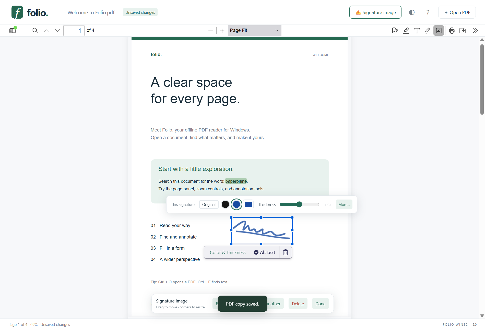

Find your place.
Search across pages, select and copy text, browse thumbnails and bookmarks, and pick up from your recent files.
A PDF READER FOR WINDOWS
Read, find, and make your mark.
Your everyday PDFs, all in one quiet place.
Free & open source · Portable ZIP · 6.8 MiB · Version 2.0
MAKE IT YOURS
Import a signature image, place it anywhere, and resize it. Select a placed signature to change its color and thickness, right on the page.

Style each signature independently. Save a PDF copy to keep your changes.
FOR THE WAY YOU WORK
Search across pages, select and copy text, browse thumbnails and bookmarks, and pick up from your recent files.
Add notes and annotations, fill PDF forms, and place image signatures. Save your work in a new PDF copy.
Zoom, rotate, switch page layouts, and use light or dark mode. Print when you need something on paper.
A LITTLE LESS FRICTION
Folio runs as a native C++/Win32 application. Its PDF interface and renderer use locally bundled PDF.js inside Microsoft WebView2.
Reading and editing happen locally. Folio does not upload your PDFs to a document service. Your recent files and signature library stay in your Windows user profile.
WebView2 is required. No .NET or separate C++ runtime installation is needed.
Save the ZIP, right-click it, and choose Extract All. Keep the entire extracted folder together.
Double-click Folio.exe in the extracted folder. Open your PDF or try the bundled sample.
If Folio reports a missing runtime, install Microsoft's WebView2 Evergreen Runtime for x64, then open Folio again.
Version 2.0 is an unsigned build for Windows 10 and 11 x64. Windows may display an unknown publisher notice. The portable app was checked with 104 integration tests covering reading, editing, signatures, and saving.
View download checksumYes. Share this page or send the complete portable ZIP. It contains the application and sample document. It does not contain your PDFs, signature library, or reading history.
Use Save PDF copy to embed your image signatures and annotations. The saved PDF can be opened in other readers. Image signatures are visual marks, not certificate-based digital signatures.
Once WebView2 is installed, Folio can read and edit local PDFs offline. Opening an external document link or installing or updating the WebView2 runtime may use the internet.
This page adds no analytics scripts, advertising, or tracking cookies. The hosting provider may process standard access logs. Downloading Folio does not require an account.